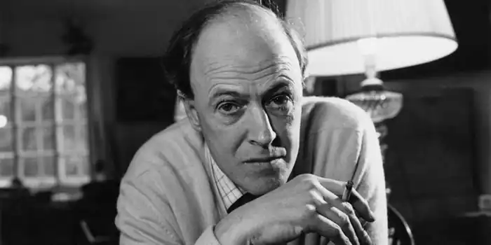
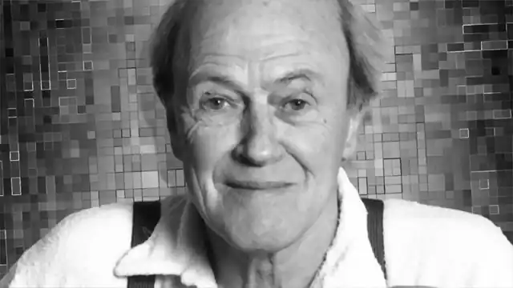

Роальд Даль народився 13-го вересня 1916-го року в Лландаффі, Кардіфф, Уельс (in Llandaff, Cardiff, Wales), в сім'ї норвезьких батьків, Харальда Даля (Harald Dahl) і Софії Магдалини Хессельберг (Sofie Magdalene Hesselberg). Своє ім'я майбутній письменник одержав у честь полярного дослідователя Роальда Амундсена (Roald Amundsen), національного героя Норвегії (Norway) того часу.
Трирічний Роальд в 1920-му позбувся своєї 7-річної сестри Астрі (Astri), яка померла від апендициту, а через кілька тижнів помер від пневмонії його 57-річний батько. Спочатку Даль навчався в школі при соборі у Лландаффі (The Cathedral School, Llandaff), після чого перейшов в школу-інтернат в Англії " (England). З 1929-го він був учнем школи Рептоне в графстві Дербішир (Repton School, Derbyshire), але надалі вирішив відмовитися від університету.
Даль був надзвичайно високого зростання – 1.98 м; він став капітаном футбольної команди, а також грав у ‘п'ятірки' і сквош. Коли юнак навчався в Рептоне, шоколадна компанія ‘Cadbury', як зазвичай, відправила в школу кілька коробок з новими цукерками в школу, щоб їх могли оцінити учні. Мабуть, Даль використовував свою мрію – вразити ‘Cadbury' винаходом нового виду шоколаду для компанії – в якості натхнення для народження його третьої дитячої книжки ‘Чарлі і шоколадна фабрика' 1963-го. Втім, ‘шоколадні мотиви' зустрічаються і в інших його книгах для дітей. Закінчивши школу, Роальд три тижні провів у походах через Ньюфаундленд (Newfoundland). У листопаді 1939-го він вступив в Королівські ВМС у званні рядового авіації. Після 970 км автопоездки з Дар-ес-Саламі (Dar-es-Salaam) в Найробі (Nairobi) Даль одержав доступ з 16-ма іншими льотчиками на тренувальні польоти. У війні вижило лише троє з цих асів-пілотів, включаючи Даля. Він служив в Королівських ВПС під час Другої світової війни, будучи розвідником і асом-винищувачем, і був підвищений до звання підполковника авіації. Популярність прийшла до Далю в 1940-х, завдяки його роботам для дорослих та дітей, і незабаром він став популярним автором у всьому світі. Його розповіді, насамперед, славляться несподіваними кінцівками, які, до речі, увійшли до антології ‘Оповідань з несподіваним кінцем' (‘Tales Of The Unexpected'). Якщо його дитячі книги вчуваються сентиментальністю, то для дорослих читачів Роальд написав безліч страшних історій. Серед найвідоміших його робіт – книги ‘Джеймс і гігантський персик' (‘James and the Giant Peach'), ‘Матильда' (‘Matilda'), ‘Відьми' (‘The Witches'), ‘Приголомшливий містер Фокс' (‘Fantastic Mr. Fox, Matilda'), ‘Великий доброзичливий велетень' (‘The Big Friendly Giant'), а також "Чарлі і шоколадна фабрика' (‘Charlie and the Chocolate Factory'). Остання була двічі екранізована – ‘Віллі Вонка і шоколадна фабрика' (‘Willy Wonka & the Chocolate Factory') в 1971-му і з оригінальною назвою у 2005-м. Після призначення в 80-у ескадрилью Королівських ВПС, Роальд сіл в застарілий винищувач-біплан ‘Глостер Гладіатор' (‘Gloster Gladiators') і був вельми здивований, що ніхто не готував його до повітряних боїв. У 1940-му він не зміг знайти злітно-посадкову смугу в 48 км на південь від міста Мерса-Матрух (Був Matruh), і, коли закінчувалося паливо і наближалася ніч, Даль був змушений спробувати сісти в пустелі. Шасі врізалося в валун, літак розбився, а його пілот зламав ніс, пошкодив череп і тимчасово втратив зір. Роальд було врятовано, однак у серпні 1946-го був визнаний інвалідом Королівських ВПС, і пізніше написав про свою катастрофи. За його першій дитячій книзі, ‘Гремліни' (‘The Gremlins') 1943-го, про маленьких шкідливих істот, яких всі пілоти ВПС звинувачували у всіх виникають проблеми з літаками, в 1984-му Джо Данте (Joe Dante) зняв популярний однойменний фільм. Роальд одружився на американской актрисі Патриції Ніл 2-го липня 1953-го. Їх шлюб тривав 30 років; у пари народилося п'ятеро дітей: Олівія (Olivia), Тесса (Tessa), Тео (Theo), Офелія (Ophelia) і Люсі (Lucy). Коли в грудні 1960-го візок із чотиримісячним Тео збило нью-йоркське таксі, малюк заробив гідроцефалію, в результаті чого його батько прийняв участь у розробці WDT-клапана, пристрою, що полегшує хворобливі стани. У листопаді 1962-го від корового енцефаліту померла Олівія, після чого Роальд став прихильником імунізації і присвятив померлої доньці свою книгу "The BFG' 1982-го. У 1965-му дружина Патриція перенесла аневризму судин головного мозку під час вагітності їх п'ятою дитиною, Люсі. Люблячий чоловік взяв під контроль реабілітацію подружжя, так що актриса змогла не тільки знову ходити і говорити, але і реанімувала свою кар'єру. І все-таки шлюб Ніл і Даля закінчився розлученням, і в 1983-му письменник одружився на Фелісіті ‘Ліссі' Кросленд (Felicity ‘Liccy' Crosland). Роальд Даль помер від гематологічного захворювання (МДС), 23-го листопада 1990-го, у віці 74-х років. В Африці (Africa), Великобританії (United Kingdom) та Латинській Америці (Latin America) 13-го вересня відзначають День Роальда Даля'.